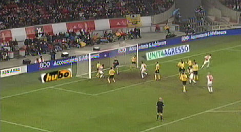

|
Ajax - Roda JC (2-0) 27 december 2006
|
Na een overtreding van De Jong is er het eerste gevaar. Het muurtje voor de
vrije trap wordt geformeerd, net binnen de zestien. De vrije trap die door
Sneijder
wordt genomen gaat recht in de handen van Castro.
In de 15e minuut is er consternatie na de 1-0 door Sneijder. Spelers van Roda JC
protesteren heftig bij arbiter Blom. Dat levert Kah geel op.
Het doelpunt gescoord door de huichelachtig juichende Sneijder is namelijk
gemaakt door de bal uit handen van doelman Castro te slaan om vervolgens te
scoren. Scheids- en grensrechter zagen het niet...... Hier een animated gif
>>>
Uitstekende passeerbewegingen van Ramzi die vervolgens mooi voorzet op
Van Tornhout die een mooie kans op de gelijkmaker verprutst.
Oper schiet de bal voorbij Gentenaar. Het doelpunt wordt echter afgekeurd
wegens buitenspel.
Een foute beslissing. Stam heft het buitenspel op. Roda voor de tweede maal door
de arbitrage ernstig benadeeld.

Uit een hoekschop ontstaat er een flipperkastsituatie waaruit Grygera de bal in
de
41e min. binnentikt: 2-0.
Prachtige schijnbewegingen van Babel tegenover Meeuwis waarna de Ajacied op
de lat schiet.
In de slotfase is Huntelaar nog dichtbij een treffer maar het blijft bij 2-0.
© Koempels Pleasure Dome
|

{kind=link}